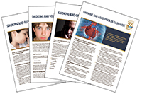

2014 Surgeon General's Report: The Health Consequences of Smoking—50 Years of Progress
 ShareCompartir
ShareCompartir
Complete Report
- Complete Report (by section)
- Download the Complete Report [PDF–36.6 MB]
Executive Summary
Supplement and Errata
- eBook Version
Consumer Booklet
- Let’s Make the Next Generation Tobacco-Free: Your Guide to the 50th Anniversary Surgeon General’s Report on Smoking and Health [PDF–36.6 MB]
A short, easy-to-read booklet that summarizes historical information on changes in smoking norms since the release of the first Surgeon General's Report in January 1964, new findings on causes, and solutions. - Hagamos que la próxima generación esté libre de tabaco. Su guía para el 50.o aniversario del informe de la Dirección General de Servicios de Salud sobre el tabaquismo y la salud [PDF–1.6 MB]
Order Documents
Order 2014 Surgeon General's Report documents from our Publications Catalog. In the Publications Catalog, type in 2014 SGR in the search box.
Fact Sheets
These fact sheets have been created for public health officials and others, and provide information taken from Surgeon General’s Reports about smoking and its connection to specific diseases and health conditions, such as cancer, diabetes and cardiovascular disease. There are also fact sheets addressing smoking risks for particular population groups, such as women, youth, and men and women concerned about reproductive health. The fact sheet “What You Need To Know About Smoking” also includes tips for smokers who want to quit.

Women and Smoking [PDF–745 KB]
Smoking and Youth [PDF–399 KB]
Smoking and Respiratory Diseases [PDF–717 KB]
Smoking and Reproduction [PDF–737 KB]
Smoking and Overall Health [PDF–847 KB]
Smoking and Diabetes [PDF–835 KB]
Smoking and Cardiovascular Disease [PDF–296 KB]
Smoking and Cancer [PDF–884 KB]
What You Need To Know About Smoking [PDF–944 KB]
Highlight Sheets
Press Release
Videos
The Next 50 Years
For more than fifty years, the Surgeon General has been reporting about the dangers of smoking and tobacco use. The findings have inspired us to help smokers quit and keep young people from starting smoking in the first place. We know the strategies that work and we are in the forefront of an historic opportunity to end the tobacco epidemic. If we work together, we can save millions of lives.
Podcasts
Clear the Air
In this podcast, Cynthia Hallett, Executive Director of Americans for Nonsmokers' Rights, talks about her sense of urgency to clear the air of secondhand smoke so everyone is equally protected from the negative health effects caused by smoking in the workplace.
The Minnesota Lawsuit:The Gift that Keeps on Giving
Doug Blanke is director of the Tobacco Control Legal Consortium, and works to reduce tobacco use nationwide. He was part of a lawsuit that forced the tobacco industry to turn over millions of pages of documents showing how they targeted children in their marketing, hid data on the dangers of smoking, and misled the American public about their products.
Confronting Commercial Tobacco Use among Native American Tribes
American Indians have the largest prevalence of smoking among population groups. In this podcast, Dr. Patricia Nez Henderson, Vice President, Black Hills Center for American Indian Health, discusses the importance of educating tribal people that cigarettes are not traditional. She and other tribal support centers are working to end commercial tobacco use among American Indians.
Banner
Embed the banner below on your Web site, social networks, profiles, and blogs.
PowerPoint™ Slides
Use these PowerPoint™ slides in your presentations to promote the release of the 50th Anniversary Surgeon's General Report on Smoking and Health.
- The Health Consequences of Smoking—50 Years of Progress: General Audience: [PPT–7.6 MB] |
- PDF [1.3 MB]
Badge
Embed the badge below on your Web site, social networks, profiles, and blogs.
Infographics Gallery
Download, pin, and share infographics on your blog, Web site, or social networking page.
CDC Feature
50th Anniversary Report on Smoking and Health
Fifty years after the first report, the 2014 Surgeon General’s Report on Smoking and Health reveals new details about the dangers of smoking as well as strategies to curtail the tobacco use epidemic.
- Page last reviewed: March 9, 2016
- Page last updated: July 22, 2015
- Content source: